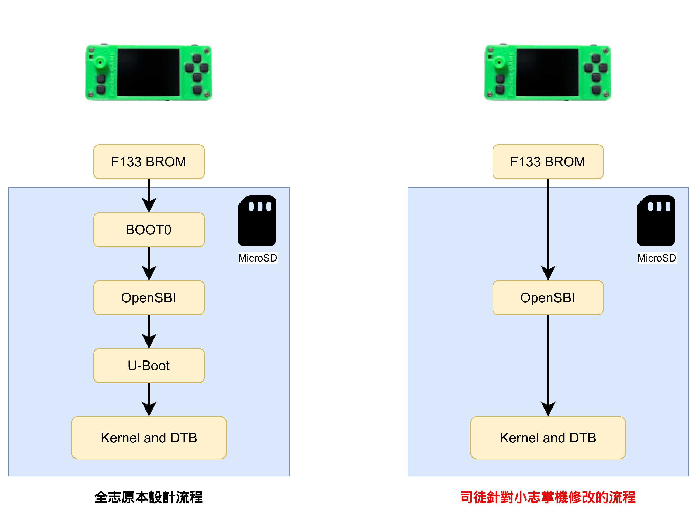
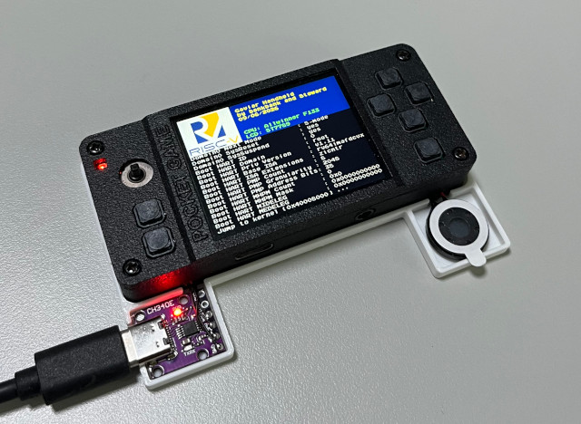
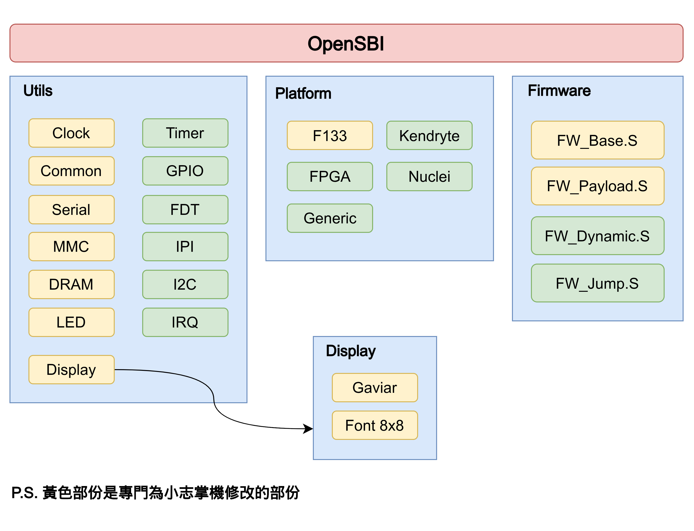
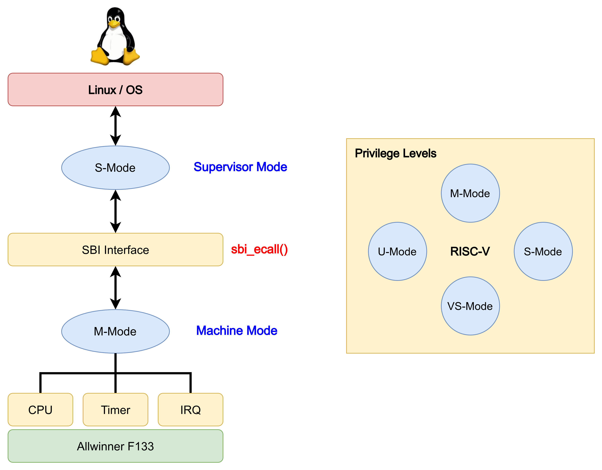

Steward
分享是一種喜悅、更是一種幸福
掌機 - Gaviar (小志掌機) - 修改OpenSBI
參考資訊：
https://linux-sunxi.org/Allwinner_Nezha
https://github.com/steward-fu/website/releases/tag/gaviar
https://github.com/ylyamin/RT-Thread-on-Allwinner-D1H/blob/master/documentation/D1_2_boot_process.md
由於全志針對F133的開機設計流程過於複雜，因此，為了可以更精簡以及方便維護程式碼，司徒特別針對小志掌機修改了一版OpenSBI，修改後的流程如下所示

編譯步驟：
$ cd $ wget https://github.com/steward-fu/website/releases/download/gaviar/thead_toolchain.tar.gz $ tar xvf thead_toolchain.tar.gz $ sudo mv thead /opt $ export PATH=/opt/thead/bin:$PATH $ cd $ wget https://github.com/steward-fu/website/releases/download/gaviar/opensbi_20260906.tar.gz $ tar xvf opensbi_20260906.tar.gz $ cd opensbi $ export PLATFORM=allwinner/f133 $ export CROSS_COMPILE=riscv64-unknown-linux-gnu- $ make distclean $ CONFIG=BROM make $ python3 scripts/gen_checksum.py ./build/platform/allwinner/f133/firmware/fw_jump.bin fw_jump.bin $ dd if=fw_jump.bin of=payload/brom.bin bs=1024 count=32 $ rm -rf fw_jump.bin $ make distclean $ make $ python3 scripts/gen_checksum.py ./build/platform/allwinner/f133/firmware/fw_jump.bin payload/fw_jump.bin $ python3 scripts/gen_checksum.py ./build/platform/allwinner/f133/firmware/fw_payload.bin payload/fw_payload.bin $ sudo dd if=payload/brom.bin of=/dev/sdX bs=1024 seek=8 $ sudo dd if=payload/fw_jump.bin of=/dev/sdX bs=1024 seek=40 $ sudo dd if=dtb of=/dev/sdX bs=1024 seek=300 $ sudo dd if=Image of=/dev/sdX bs=1024 seek=400
由於目前Kernel程式碼尚未完成，因此，司徒使用LED閃爍程式替代，開機後，OpenSBI會跑LED閃爍程式

Baudrate 115200bps
[UART] Gaviar Handheld
[DRAM] ZQ value = 0x2f
[DRAM] get_pmu_exist() = -1
[DRAM] ddr_efuse_type = 0xa
[DRAM] trefi = 7.8ms
[DRAM] single rank and full DQ!
[DRAM] ddr_efuse_type = 0xa
[DRAM] trefi = 7.8ms
[DRAM] rank 0 row = 13
[DRAM] rank 0 bank = 4
[DRAM] rank 0 page size = 2 KB
[DRAM] DRAM BOOT DRIVE INFO: v0.33
[DRAM] DRAM CLK = 528 MHz
[DRAM] DRAM Type = 2 (2:DDR2, 3:DDR3)
[DRAM] DRAMC read ODT off
[DRAM] DRAM ODT off
[DRAM] ddr_efuse_type = 0xa
[DRAM] DRAM SIZE = 64M
[DRAM] dram_tpr4 = 0x0
[DRAM] PLL_DDR_CTRL_REG = 0xf8002b00
[DRAM] DRAM_CLK_REG = 0xc0000000
[DRAM] MR2 = 0x0
[DRAM] DRAM simple test OK
[eMMC] MicroSD size = 59688MB
[eMMC] Copy DTB to 0x41500000 (size = 65536)...
[eMMC] Copy Kernel to 0x40008000 (size = 8388608)...
[eMMC] Copy OpenSBI to 0x41000000 (size = 262144)...
Welcome to Gaviar handheld
OpenSBI v1.3
____ _____ ____ _____
/ __ \ / ____| _ \_ _|
| | | |_ __ ___ _ __ | (___ | |_) || |
| | | | '_ \ / _ \ '_ \ \___ \| _ < | |
| |__| | |_) | __/ | | |____) | |_) || |_
\____/| .__/ \___|_| |_|_____/|____/_____|
| |
|_|
Platform Name : Allwinner F133
Platform Features : medeleg
Platform HART Count : 1
Platform IPI Device : ---
Platform Timer Device : --- @ 0Hz
Platform Console Device : f133_uart
Platform HSM Device : ---
Platform PMU Device : ---
Platform Reboot Device : ---
Platform Shutdown Device : ---
Platform Suspend Device : ---
Platform CPPC Device : ---
Firmware Base : 0x41000000
Firmware Size : 194 KB
Firmware RW Offset : 0x20000
Firmware RW Size : 66 KB
Firmware Heap Offset : 0x28000
Firmware Heap Size : 34 KB (total), 2 KB (reserved), 8 KB (used), 23 KB (free)
Firmware Scratch Size : 4096 B (total), 728 B (used), 3368 B (free)
Runtime SBI Version : 1.0
Domain0 Name : root
Domain0 Boot HART : 0
Domain0 HARTs : 0*
Domain0 Region00 : 0x0000000041000000-0x000000004101ffff M: (R,X) S/U: ()
Domain0 Region01 : 0x0000000041020000-0x000000004103ffff M: (R,W) S/U: ()
Domain0 Region02 : 0x0000000000000000-0xffffffffffffffff M: () S/U: (R,W,X)
Domain0 Next Address : 0x0000000040008000
Domain0 Next Arg1 : 0x0000000041500000
Domain0 Next Mode : S-mode
Domain0 SysReset : yes
Domain0 SysSuspend : yes
Boot HART ID : 0
Boot HART Domain : root
Boot HART Priv Version : v1.11
Boot HART Base ISA : rv64imafdcvx
Boot HART ISA Extensions : zicntr
Boot HART PMP Count : 8
Boot HART PMP Granularity : 2048
Boot HART PMP Address Bits: 38
Boot HART MHPM Count : 0
Boot HART MHPM Mask : 0x0
Boot HART MIDELEG : 0x0000000000000222
Boot HART MEDELEG : 0x000000000000b109
Jump to kernel (0x40008000) ...
司徒列出幫小志掌機修改的部份

為何RISC-V需要有這些模式呢？可以從下圖得知，Linux/OS一般跑在S-Mode，但是當需要控制底層時，就需要切換M-Mode，這也是SBI介面的由來，當然，如果不用Linux/OS，就可以自己實做這一部份
